Défi 30 jours, 30 dessins
Il paraît qu’il faut créer des choses et faire travailler son imagination pour se sentir bien, s’épanouir et développer son esprit.
Je ne me suis jamais vraiment posé la question. Je sais juste que je dois saisir les occasions qui se présentent pour repousser mes limites.
Diatomée et SylverT se sont lancés dans un défi de 30 jours, du 20 novembre au 19 décembre, durant lesquels ils vont dessiner (ou peindre, etc) sur le thème d’une musique donnée chaque jour. J’ai décidé de les suivre. Je ne suis pas la seule puisque Fano Ril a choisi d’orienter ses créations vers la jonglerie en produisant une vidéo par jour. Let’s go !
Jour 1 : Venus in the morning de Stratovarius.
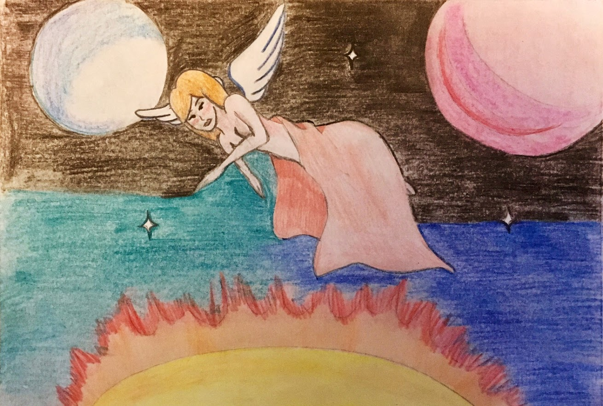
Médium et technique : papier blanc 70g, crayons de couleurs.
Jour 2 : Son Of Mr. Green Genes de Franck Zappa.
Je n’ai pas achevé ce dessin (c’est encore le brouillon !), car je n’arrivais pas du tout à faire venir l’image qui m’impregnait le cerveau jusqu’au bout de mes doigts pour la retranscrire !
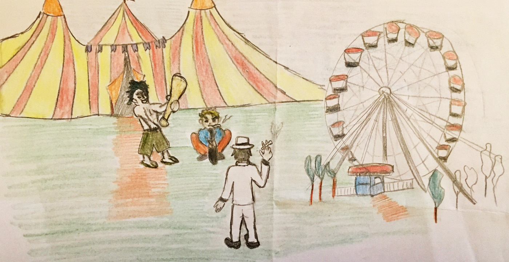
Médium et technique : papier blanc 70g, crayons de couleurs.
Jour 5 : Lotus) de Yoshi Shimada
Honte à moi, je n’ai pas eu le courage (ni l’inspiration) de faire quoique ce soit ces deux derniers jours. Peut-être à cause de l’ambiance déprimante de la musique Le diable existe de Peste Noire .
ou de l’inconnu givrant de Warhole de Erik Truffaz & Murcof .Je n’ai pas d’excuses…
En tout cas pour le cinquième jour, avec Lotus) de Yoshi Shimada (compositeur) et Jalan Jalan (interprète), que j’adore, j’ai été plus inspirée. Dans le film il y a de drôles de lapins qui flottent en apesanteur, alors j’ai dessiné des lapins !
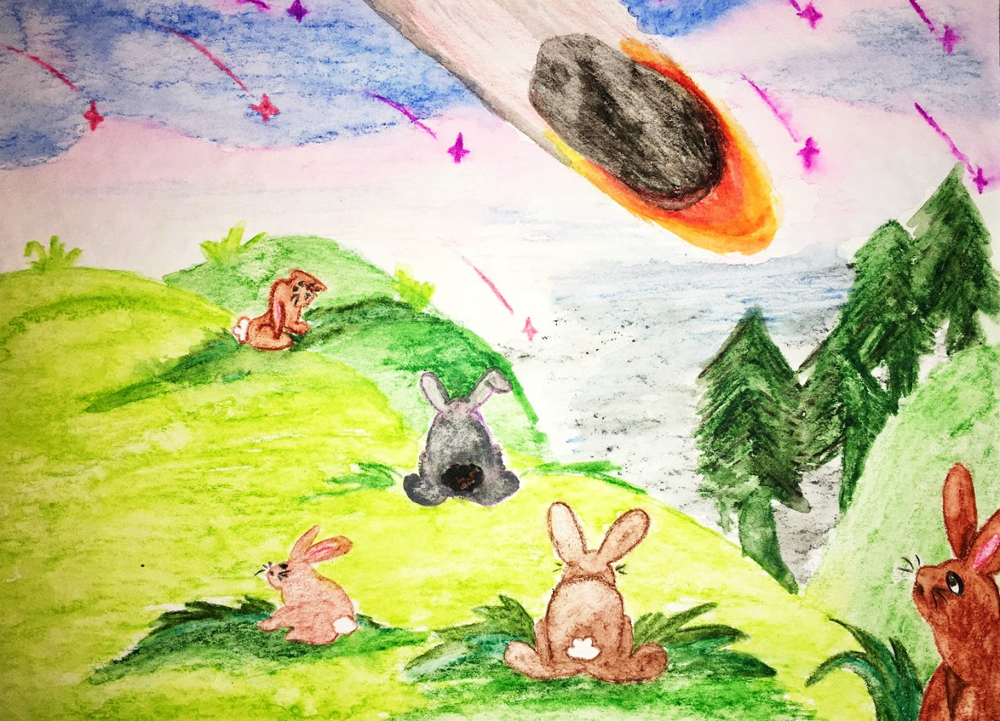
Médium et technique : papier à aquarelle grain nuage 270g, crayons aquarellables.
Jour 6 : Barracumbarra de Joyce Moreno .
Musique très inspirante et agréable. Au bout d’un moment, on voudrait chanter comme la chanteuse !
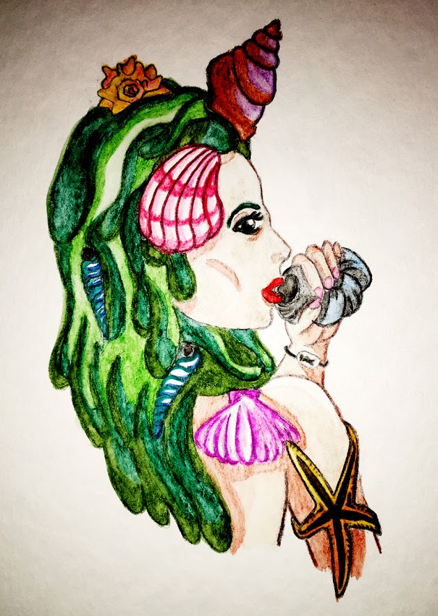
Médium et technique : papier à aquarelle grain nuage 270g, crayons aquarellables.
Jour 7 : За Рекой Смородиной de Рабор .
Cette musique est magnifique, mais elle fait remonter une certaine mélancolie en moi. Cette sensation s’empare aussi de moi quand j’écoute quelques chansons d’Anathema qui m’ont inspirées l’histoire de Rena (personnage de mon roman Samare). Du coup, j’ai voulu dessiner la peine de Rena.
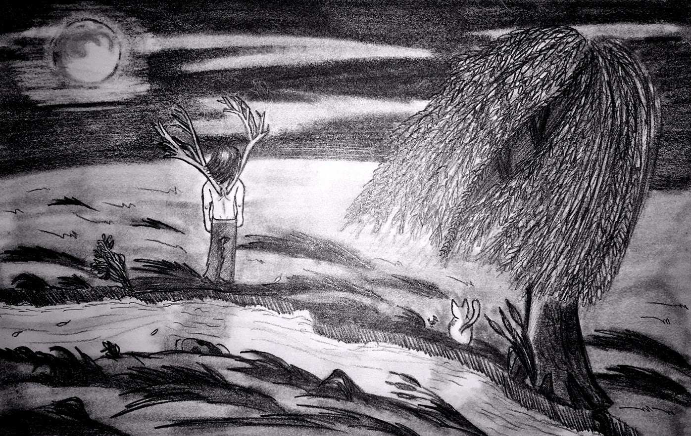
Médium et technique : papier blanc 120g, crayon de papier 3B et 4B.
Jour 8 : The Awakening of a Woman de The Cinematic Orchestra .
Au départ, cette musique ne m’inspirait pas grand chose. Puis, à force de l’écouter, j’ai perçu une sorte de dynamique héroïque. Sur mon dessin, les deux protagonistes se sentent comme des héros, à défendre et protéger, mais on ne sait pas qui la foule soutient, ni pourquoi la fillette se cache sous la cape.
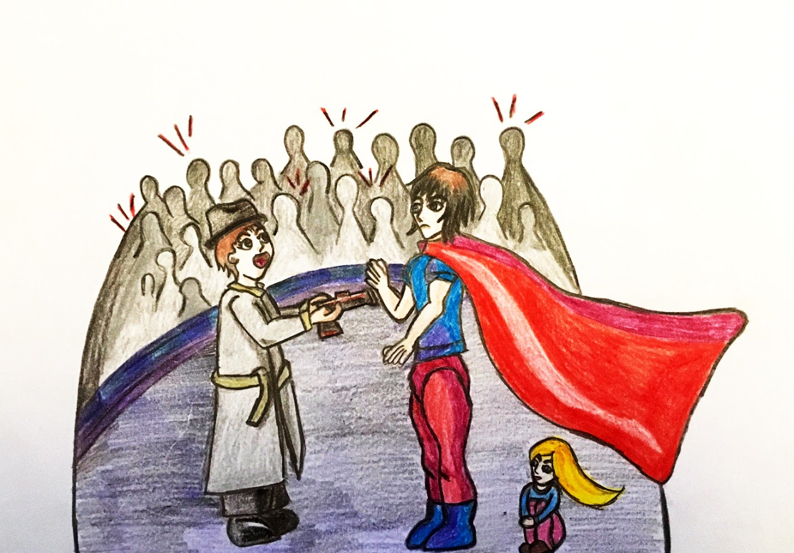
Médium et technique : papier blanc 90g, crayons de couleurs.
Jour 9 : ザクロ de Dir En Grey.
J’adore cette chanson, elle est l’une de mes préférées de ce groupe japonais fabuleux. J’attendais beaucoup de mon interprétation graphique. Je suis assez contente, même si le point crucial de mon dessin est un peu tombé à plat à cause du geste représenté. Il fallait s’attarder sur la contemplation du sang qui coule, pas sur la plaie ^^.
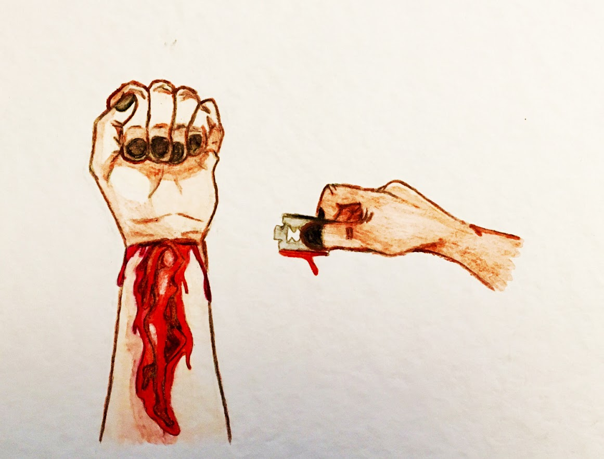
Médium et technique : papier à aquarelle grain nuage 270g, crayons aquarellables.
Jour 10 : Trapped by a Thing Called Love de Denise Lasalle.
Musique sympathique, mais qui ne m’inspirait pas beaucoup. Je voyais quelque chose comme une scène figée autour de deux personnes happées par l’amour. Je n’ai pas réussi à la représenter comme je la voyais.
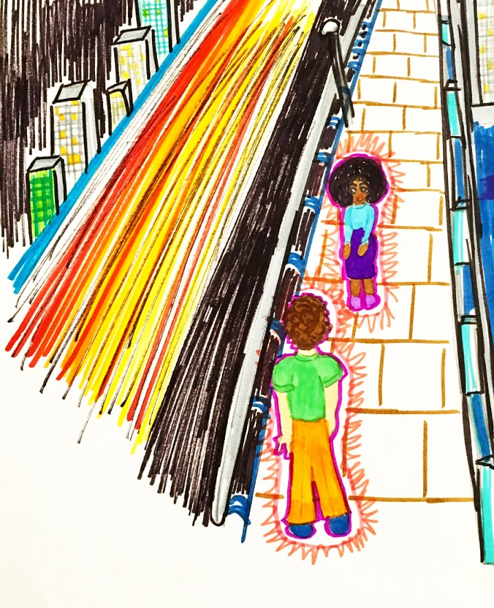
Médium et technique : papier blanc 90g, feutres à l’eau.
Jour 11 : Jerim. My land de Altai Kai .
Superbe musique qui nous transporte tout de suite dans les grandes plaines verdoyantes et froides de l’Altai. J’ai pensé aux chevaux et j’ai eu l’impression de replonger en enfance, quand je peignais des Numéros d’Art, ces tableaux avec des numéros à recouvrir par des couleurs données pour obtenir un beau résultat. Il y avait souvent des chevaux ^^.
Ce dessin est l’un de mes préférés.
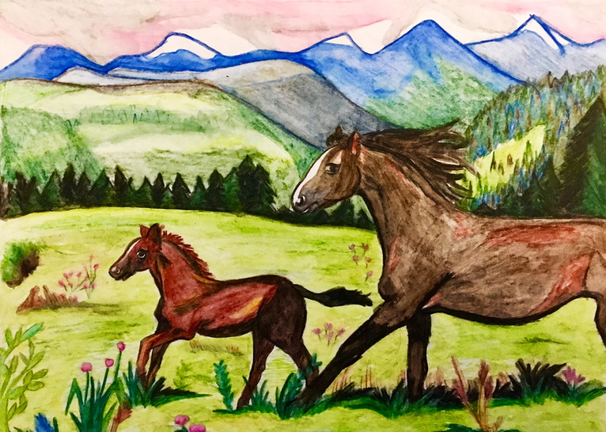
Médium et technique : papier à aquarelle grain nuage 270g, crayons aquarellables.
Jour 12 : Translator’s Clos II de Esmerine.
Ahh oui ! Zéro idée. Trou noir. J’ai écouté, écouté… Puis j’ai pensé à l’exploit, à l’espoir. À Moïse du coup.
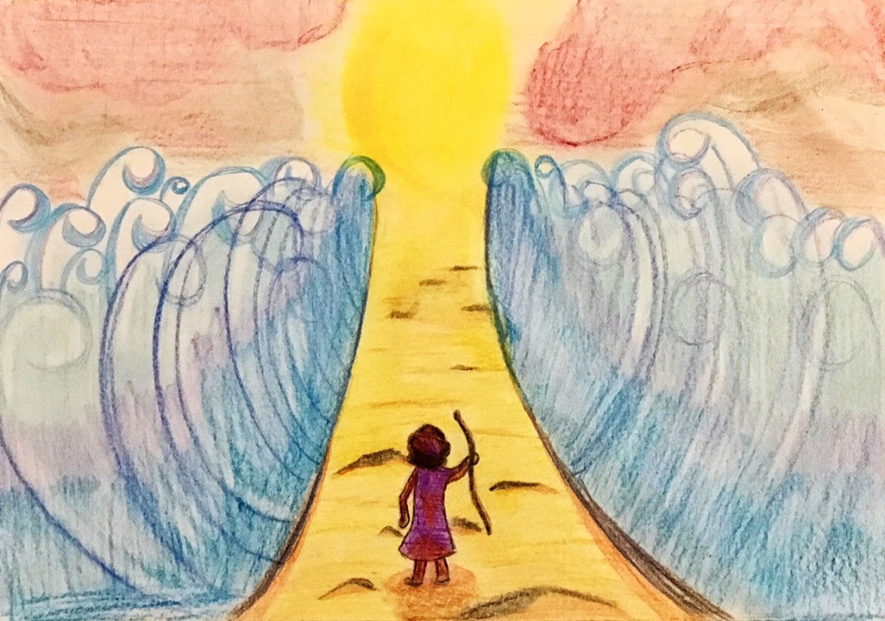
Médium et technique : papier blanc 70g, crayons de couleurs.
Jour 13 : Sublimation At Zero Hour de Immundus .
Cette musique m’a tout de suite évoqué un voyage difficile qui vaut le coup. En même temps, ça m’a fait penser au livre (et au film) Abyss. Alors plouf !
Je crois que de tous mes dessins dans ce défi, celui-ci est mon préféré.
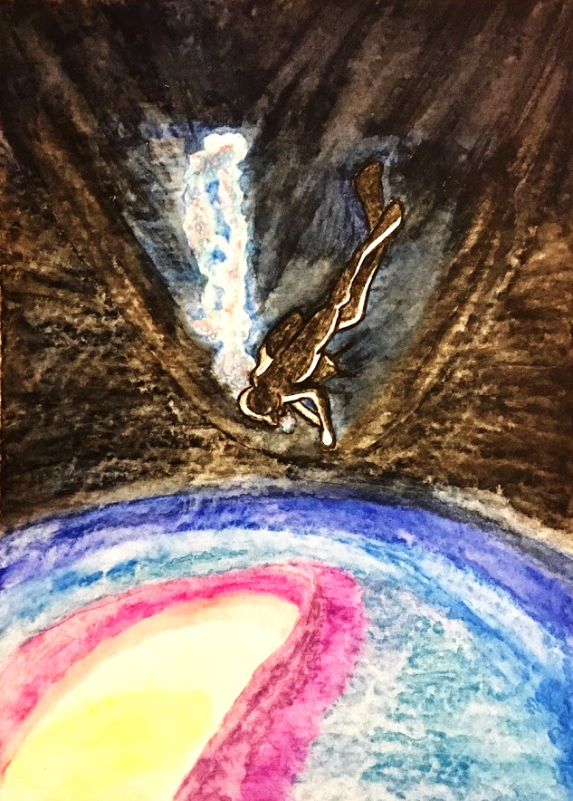
Médium et technique : papier à aquarelle grain nuage 270g, crayons aquarellables.
Jour 14 : Dead Dogs Two [Boards Of Canada Remix] de cLOUDDEAD .
Je n’aime pas cette musique. Elle m’a aussitôt évoqué une envie de vomir. En même temps, elle est assez rigolote dans son genre, un peu à la Gorillaz. Voilà le résultat de ma pensée.
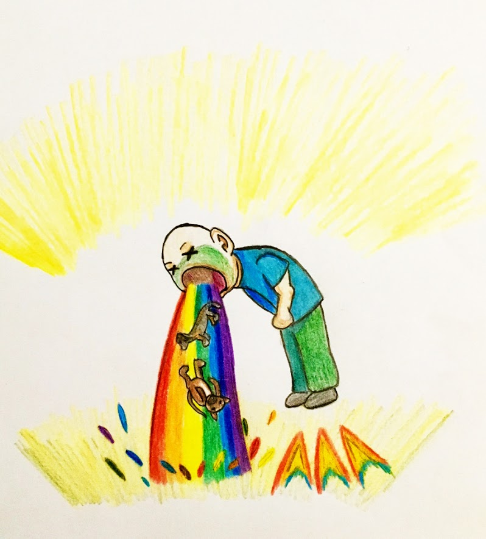
Médium et technique : papier blanc 70g, crayons de couleurs.
Jour 15 : Atom dance de Björk.
Musique trop exceptionnelle pour que j’arrive à faire quoique ce soit de correct dessus. Je pensais à une danse de feux follets. Je ne me suis pas beaucoup appliquée, je l’avoue.
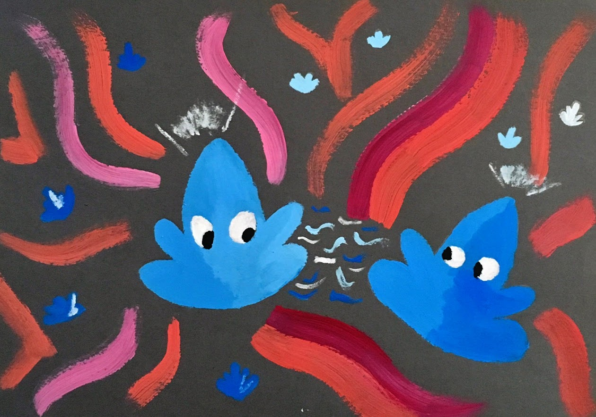
Médium et technique : papier gris foncé 180g, peinture gouache.
Jour 16 : Distances de H.U.V.A. Network .
Belle découverte musicale. En entendant cette mélodie un peu perdue dans le temps et l’espace, un peu angoissante et attirante à la fois, j’ai pensé à des extraterrestres. Et plus précisément à une abduction par des extraterrestres. Cette pensée m’a amené à revoir Scarlett Johansson dans son rôle d’être venant d’une autre planète, dans le film Under the skin (très flippant). J’ai essayé de reproduire l’affiche du film, sans grand succès. Cette femme est tellement belle, magnifique, parfaite, je ne pouvais que me planter.

Médium et technique : papier Canson 224g, crayon de papier 4B.
Jour 17 : Infernal beauty et Lucifer de Elend (de 22:40 à 37:56).
Alors là, ça ne rigole plus. On entre dans les ténèbres pour de bon. Un quart des musiques de ce défi est assez obscure !
Avec Elend, j’ai pensé à quelque chose de beau, de clairsemé et de lumineux où couverait une force maléfique que l’on ne soupçonnerait pas. S’en est produit un Balrog de Morgoth dissimulé dans la pénombre d’une forêt de bouleaux blancs. J’ai accentué les contrastes sur la photo,car ça ne rendait rien.
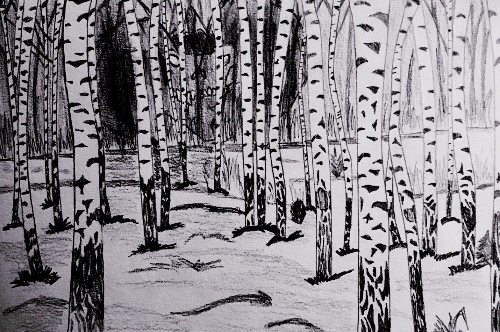
Médium et technique : papier Canson 224g, crayon de papier HB.
Jour 18 : Camp d’Argeles de Renaud Garcia-Fons.
Trou noir ! Ou plutôt chou blanc ! Aucune inspiration, aucune idée, aucune appréciation de la musique. La seule chose qu’elle m’évoquait était sa scandaleuse simplicité. J’ai cherché une lumière en regardant la couverture du disque et du coup, j’ai fait quelque chose d’un peu latino, espagnol. Quelque chose qui fait penser aux vacances dans le sud de la France, au camp d’Argeles. Un cactus. Diatomée a pensé à la même chose, mais en plus délirant ^^.
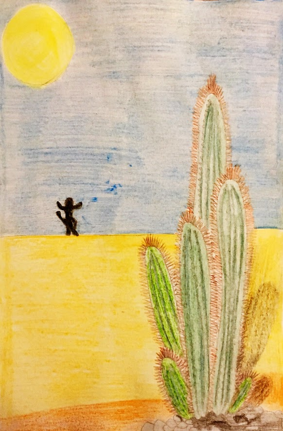
Médium et technique : papier blanc 70g, crayons de couleurs.
Jour 19 : Maverick de Deadlife .
Excellente musique !
La voix féminine robotique et le côté futuriste et métallique m’ont encore une fois projetée vers la belle Scarlett Johansson, mais dans le rôle de Major cette fois, dans Ghost in the Shell (excellent film soit dit en passant). Avec le ronronnement du moteur dans la musique, il fallait que je fasse une voiture de course aussi. Mon dessin paraît assez décousu et les immeubles sont dans le mauvais plan. D’ailleurs tout semble avoir été posé côte à côte sans grande logique, mais c’est comme ça. Il y a la ville du futur, la bagnole et la fille. Impec !
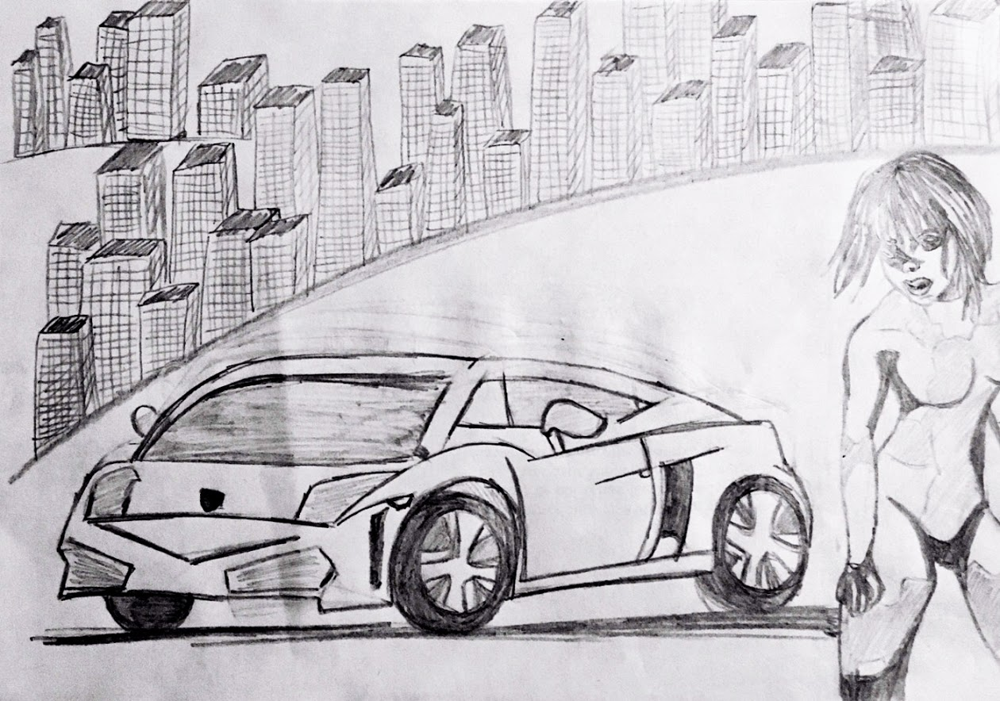
Médium et technique : papier blanc 70g, crayon de papier HB
Jour 20 : Warszawa de David Bowie.
SylverT avait parlé d’un OVNI dans ses musiques. Je croyais que c’était celle-ci, car, Dieu sait pourquoi, on assimile toujours David Bowie à un extraterrestre. En fin de compte, la musique (qui est sublime), m’a évoquée l’Afrique, un côté sauvage et doux.
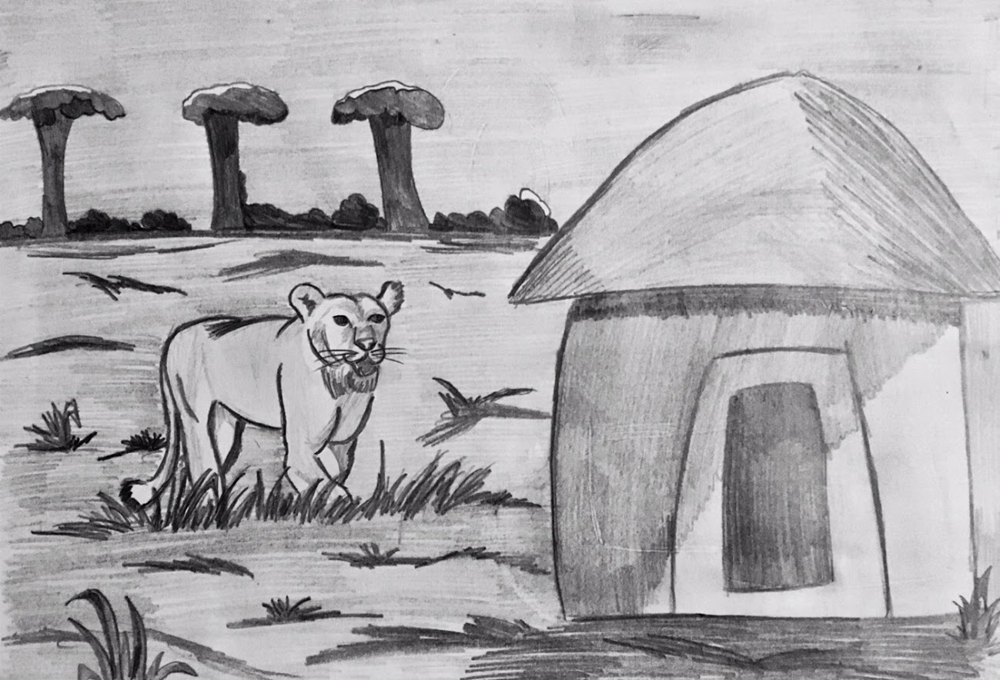
Médium et technique : papier blanc 90g, crayons de papier 3B et 4B.
Jour 21 : もののけ姫 theme de Joe Hisaishi, interprétée par Masako Hayashi (de 4:42 à la fin).
Une pure merveille cette musique. Elle ne pouvait que m’évoquer la beauté de la nature du dessin animé de Hayao Miyasaki.
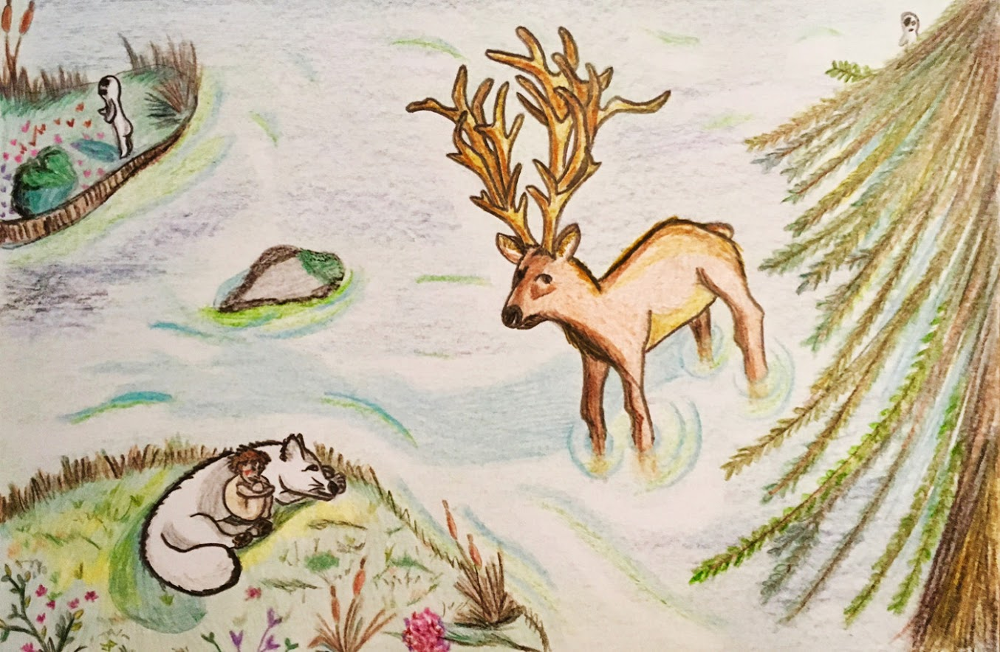
Médium et technique : papier Canson 224g, crayons de couleurs.
Jour 22 : Space Lion - Episode 13 de The Seatbelts, Yoko Kanno (Cowboy Bebop OST) .
Ouah, magnifique découverte musicale ! Un peu jazz, un peu afro-américain. Super. Les voix et l’ambiance m’ont inspirées une tribu, un gourou.
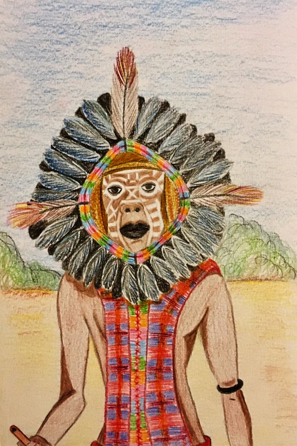
Médium et technique : papier Canson 224g, crayons de couleurs.
Jour 23 : Bathory Aria: … de Cradle of Filth.
La beauté, la chair, la croix, le sadisme, la cruauté, la mort et la Bête, autant de thèmes qui émanent de cette superbe chanson.
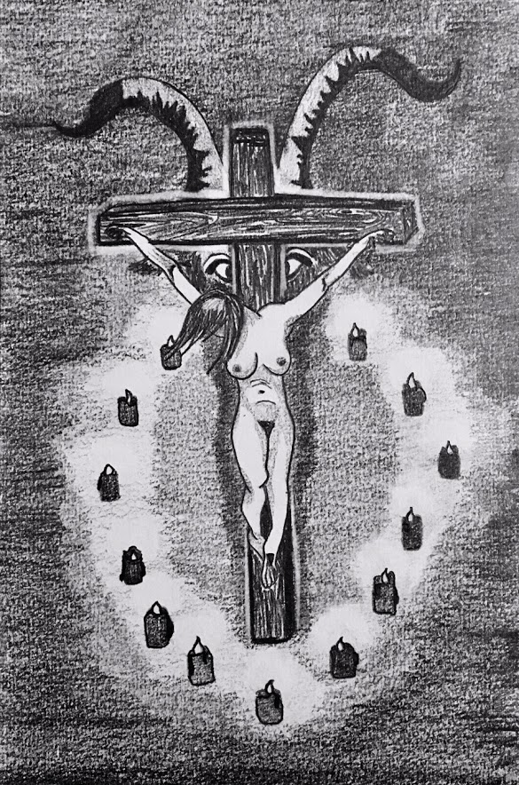
Médium et technique : papier Canson 224g, crayons 3B et 4B.
Jour 24 : Guitar Solo, No. 5 de Neil Young (Dead Man OST).
Le film Dead Man était bien, le personnage de Personne excellent. Cette musique ne me plait pourtant pas plus que ça. Elle m’évoque seulement la fin.
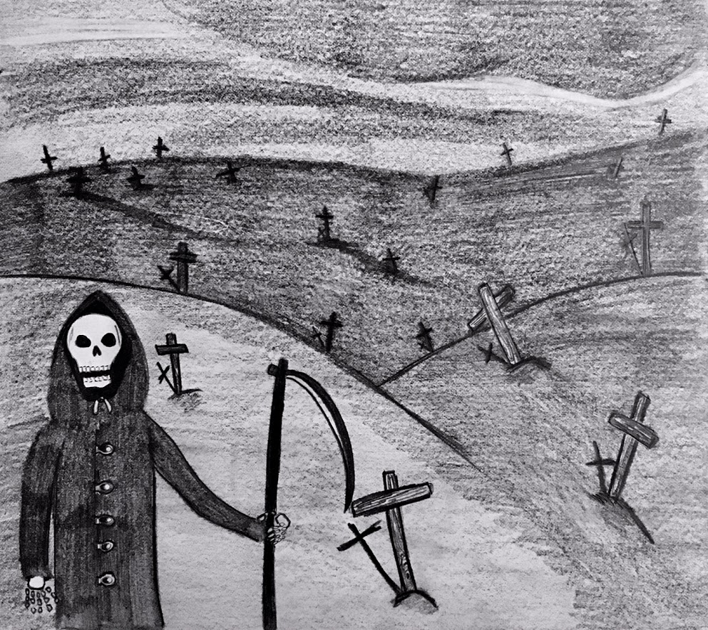
Médium et technique : papier à dessin 180g, crayons de papier 3B et 4B.
Jour 25 : From past to present de Jeremy Soule (The Elder Scrolls V : Skyrim OST) .
Les paysages nordiques de Bordeciel ont influencé ma perception de la musique. Le dessin manque de contrastes.
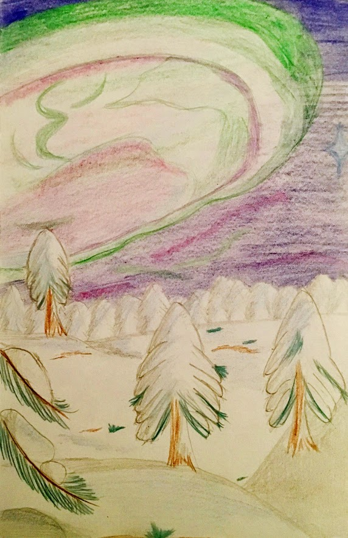
Médium et technique : papier blanc 90g, crayons de couleurs.
Jour 27 : Burial de Ghost Bath
Dernier dessin que j’ai manqué. La musique The Grid de Philip Glass (Koyaanisqatsi OST) m’inspirait le fouillis, l’effervescence et me faisait penser au film The Grand Budapest Hotel, mais je n’ai pas eu le courage de dessiner.
Pour le jour 27 en revanche, la musique de Ghost Bath m’a littéralement fait penser à l’enterrement.
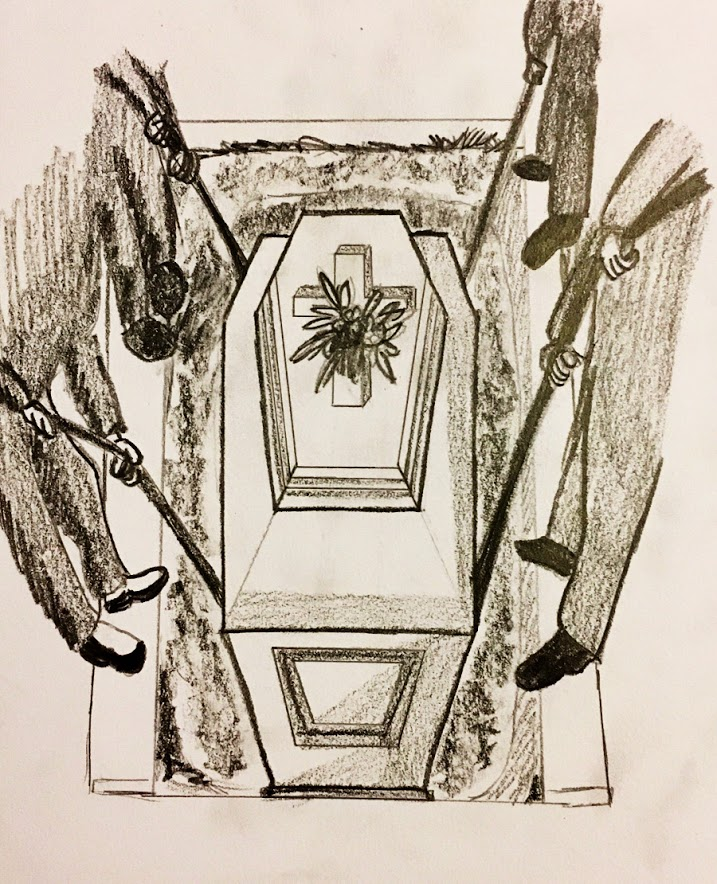
Médium et technique : papier à dessin 180g, crayon de papier 4B.
Jour 28 : Eye In The Sky de The Alan Parsons Project.
Excellente découverte. Cette musique un peu pop des années 80’ a fait remonter les souvenirs du pub de Norvège où on pouvait écouter les Beatles ! Belle ambiance.
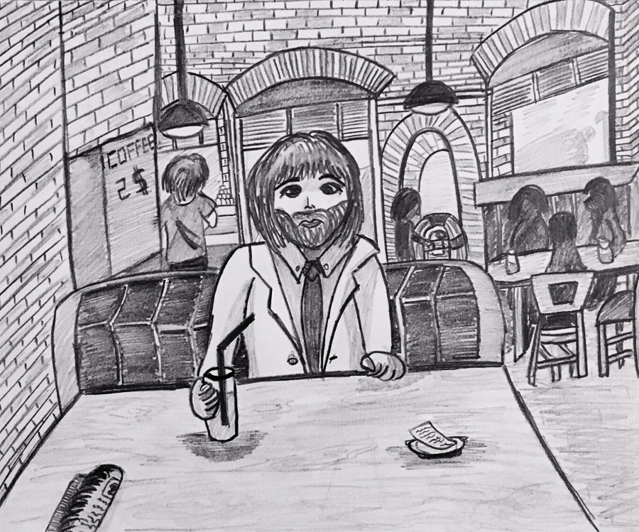
Médium et technique : papier blanc 90g, crayon de papier HB.
Jour 29 : Island Girl de Aura Shining Green.
Diatomée voulait mettre une musique de ce groupe dans la liste et je lui ai demandé de proposer celle-ci. Je l’adore. Une fois de plus, j’attendais énormément de cette musique. Depuis le début, elle me fait penser à mon histoire avec Rena dont j’ai déjà parlée. Pour le dessin du jour, elle m’a surtout évoqué la perte, la solitude et le désespoir. La fille risque de chuter dans un océan sans fin. Il y a une rupture entre deux mondes qui se repoussent. Le garçon restera seul, dans une aurore verte et bien triste.
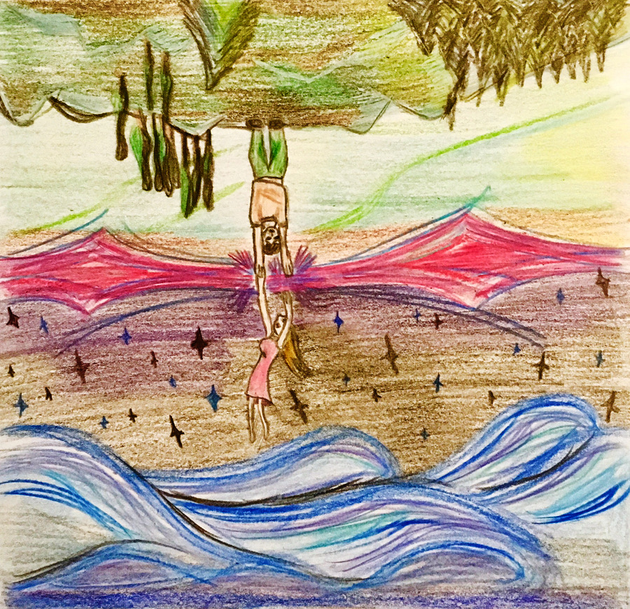
Médium et technique : papier à dessin 180g, crayons de couleurs.
Jour 30 : « Avril 14th »(Aphex Twin) de Murcof x Wagner.
Encore une jolie mélodie qui m’a évoqué la beauté de l’âme. Donc si j’ai dessiné un ange, ce n’est pas parce que Fano Ril a demandé un dessin divin pour la fin du défi ! Mais ça tombait bien ^^.
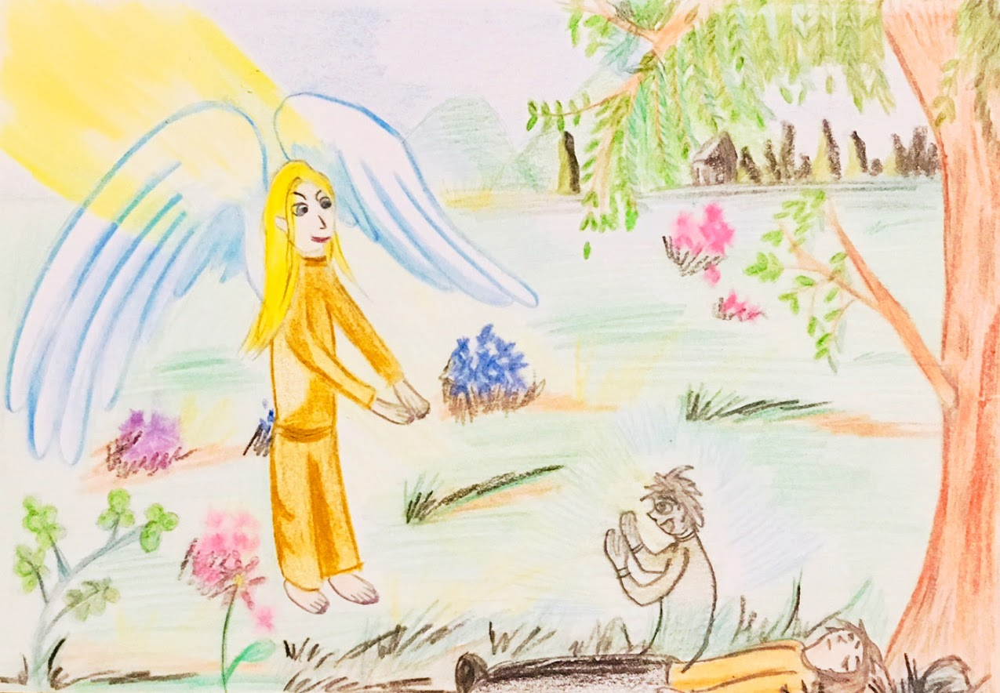
Médium et technique : Papier à dessin 180g, crayons de couleurs.
Petit bilan de cette expérience :
- de jolies découvertes musicales
- d’autres un peu moins bonnes
- le plaisir de me remettre à dessiner
- le regret que nous n’ayons pas eu assez de feuilles pour faire de l’aquarelle
- la lassitude de mes échecs
- l’exaspération de voir quelque chose d’extra dans ma tête, mais de ne pas aboutir au bon résultat sur le papier
- la déception de ne pas avoir été suffisamment courageuse pour dessiner tous les jours
- la surprise et la joie de réaliser qu’en fin de compte, je n’ai râté que 3 jours !
- le manque de satisfaction complète : mes dessins ne me plaisent pas tellement
Pour conclure, je dirai que j’aurais aimé faire beaucoup de ces dessins à l’aquerelle, mais je n’avais plus de feuilles assez épaisses ! Et puis, j’aurais dû aussi utiliser des vrais tubes de peinture aquarelle, et pas que des crayons que l’on peut dilluer. Et j’aurais aimé utiliser plus de techniques différentes.
Je n’avais pas posté tous mes dessins sur Discord, je m’en excuse. Ici, ils sont tous visibles.
Je continuerai de dessiner parce que ça m’avait manqué et que, effectivement, c’est un très bon exercice pour maintenir son esprit actif et concentré.
Merci pour ce défi :)